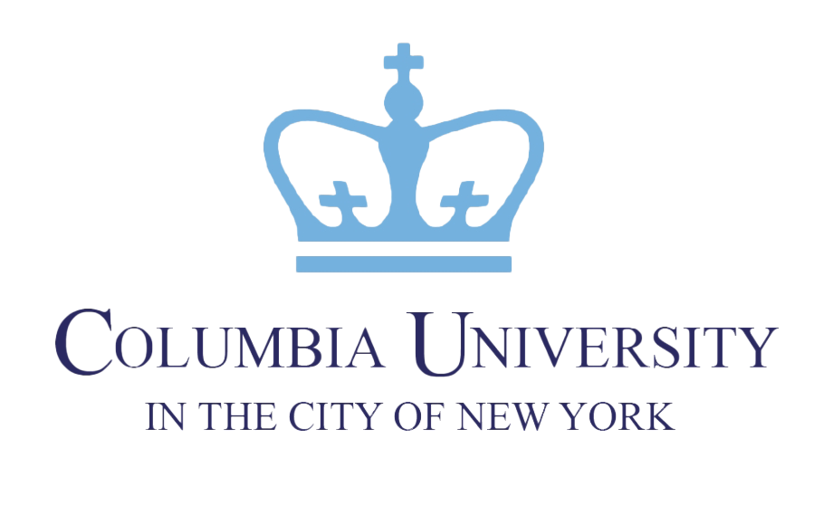
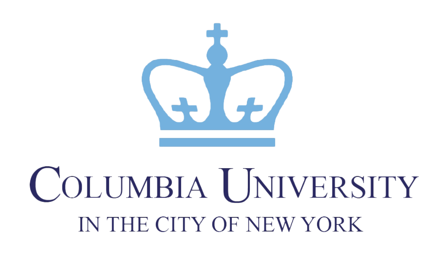

My Story
When my high school counselor told me, "You have no shot at Stanford—only Olympians get in," I took it as a challenge. Not only did I get in with a full-ride, but I did it all on my own as a NYC public school student—no coach, family, or friends.
I graduated from Stanford with a Bachelors and Masters in Artifical Intelligence, within 5 years. My journey of defying the odds shaped my approach to college admissions: it's about helping your child understand their 'why' and detailing this journey for admission readers.
Today's admission coaches push cookie-cutter strategies, but these fall flat. Admissions readers spot them from a mile away, and discard these applications in a heartbeat. What truly stands out is when a reader understands who your child is, what drives them, and the role they'll play on-campus.
A decades-out-of-college consultant with a checklist can't help you with this. You need someone who's just been through the process—someone who can help your child uncover and articulate their "why". This is what I do.


 
